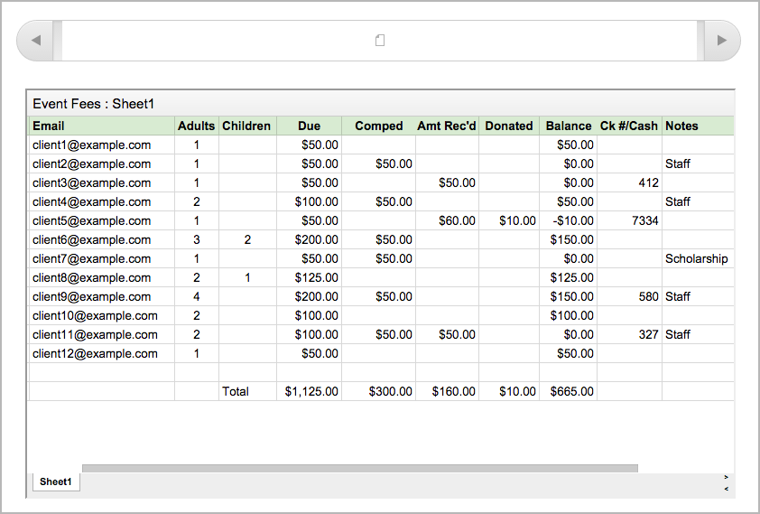
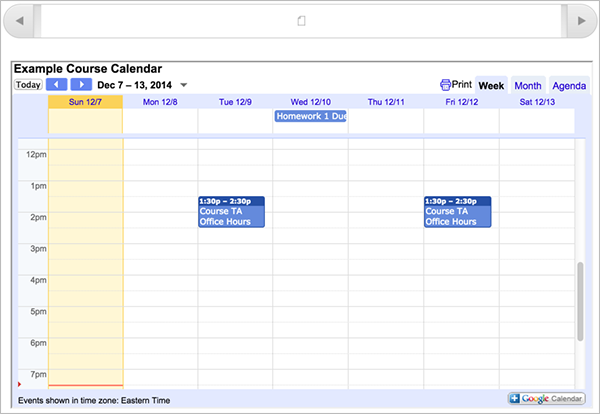
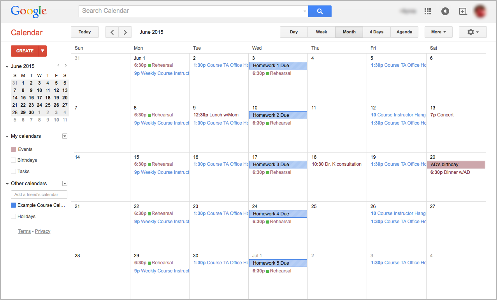

14. Using Google Files and Calendars in an edX Course#
This topic describes how to work with files and calendars in your edX course.
14.1. Overview of Embedded Files and Calendars#
Courses can include files, such as documents, spreadsheets, and presentations, and a calendar. Your course team uses Google to create and maintain these files and calendars. They appear in the body of your course just like any other course content.
Note
Google services are not available in some regions and countries. If Google services are not available in your area, you might see an “image unavailable” message in the place of the Google file or calendar. The course team might provide alternative resources if Google services are not available for you.
14.2. Google Drive Files#
Your course might include the following types of Google Drive files.
Google Docs (text documents)
Google Drawings (images)
Google Forms (forms or surveys)
Google Slides (presentations)
Google Sheets (spreadsheets)
For example, your course might include a spreadsheet that resembles this one.
{kind=link}
You can interact with these Google Drive files in your course. For example, you can complete forms, look through the slides in a presentation, and enter different values in a spreadsheet. However, you cannot save changes that you make to the Google Drive file.
14.3. Google Calendars#
If your course includes a Google calendar, you see that calendar in the body of the course. You can also add it to your own Google calendar.
{kind=link}
By default, the view that opens in the course calendar is the view that the course team set. You can change the view by selecting the Week, Month, or Agenda tabs in the upper-right corner.
When you view the calendar in your course, the dates and times on the calendar automatically adjust to your local time. Your time zone information appears in the lower-left corner of the screen.
14.3.1. Add the Course Calendar to Your Own Calendar#
If you have your own Google calendar, you can add the Google calendar from a course to it. After you add a calendar, you see that calendar whenever you view your personal calendar, even if you are not signed in to your edX account. The course information appears together with your own information.
{kind=link}
To add the course calendar to your own calendar, view the course calendar in the course, and then select the Google Calendar icon in the lower-right corner of the course calendar.
For more information about Google calendars, see the Google Calendar website.